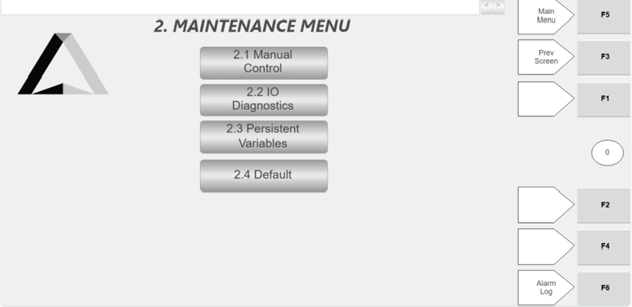
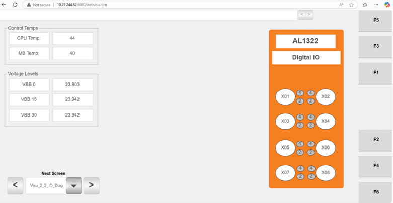
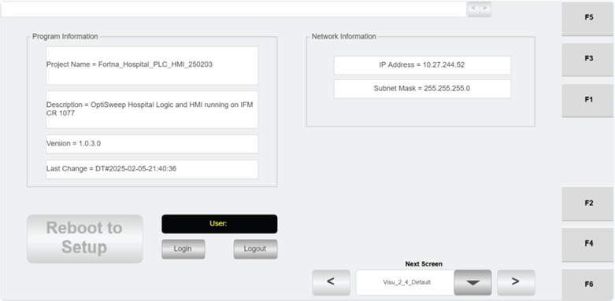

| Procedure ID | proc_open_hospital_hmi_maintenance_menu_v1 |
|---|---|
| Title | Open Hospital HMI Maintenance Menu and select maintenance functions (Manual Control, IO Diagnostics, Persistent Variables, Default) |
| Procedure Type | operation |
| Primary Role | operator |
| Support Safe | Yes |
| Capability Tags | gateway_health |
| Access Surface | hospital_hmi |
| Audience Roles | operator |
| Failure Pattern Tags | None |
| Validation Status | needs_sme_review |
| Merge Status | source_finalized |
On the Hospital HMI / lane UI, open the “Maintenance Menu” screen and use its four buttons to navigate to the selected maintenance function screen: 2.1 Manual Control, 2.2 IO Diagnostics, 2.3 Persistent Variables, or 2.4 Default.
Use when you need to navigate the Hospital HMI Maintenance Menu to reach a specific maintenance function screen (Manual Control, IO Diagnostics, Persistent Variables, or Default).



Responsible role: operator
Instruction:
On the Hospital HMI / lane UI, navigate to the “Maintenance Menu” screen.
Expected result:
The Hospital HMI shows the “Maintenance Menu” screen.
Responsible role: operator
Instruction:
Check that the Maintenance Menu screen shows exactly these four buttons: “2.1 Manual Control”, “2.2 IO Diagnostics”, “2.3 Persistent Variables”, and “2.4 Default”.
Expected result:
All four buttons are present with the exact labels 2.1, 2.2, 2.3, and 2.4 as shown on the Maintenance Menu.
Stop or Escalate If:
Responsible role: operator
Instruction:
Click the desired button on the Maintenance Menu: Manual Control (2.1), IO Diagnostics (2.2), Persistent Variables (2.3), or Default (2.4).
Expected result:
The Hospital HMI screen changes away from the Maintenance Menu and opens the corresponding maintenance function screen for the selected button.
Stop or Escalate If:
Responsible role: operator
Instruction:
Confirm the Hospital HMI no longer shows the Maintenance Menu buttons and instead shows the maintenance function screen corresponding to the button you selected.
Expected result:
The UI displays the selected maintenance function screen (Manual Control / IO Diagnostics / Persistent Variables / Default).
Stop or Escalate If: